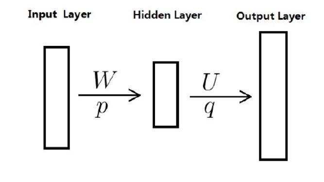
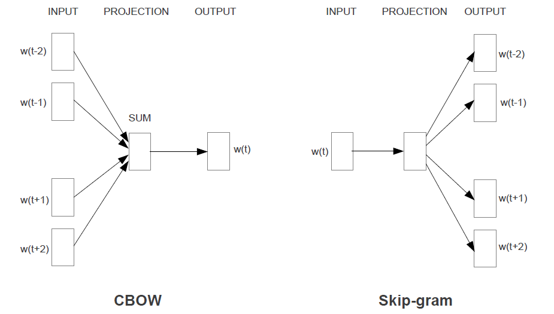
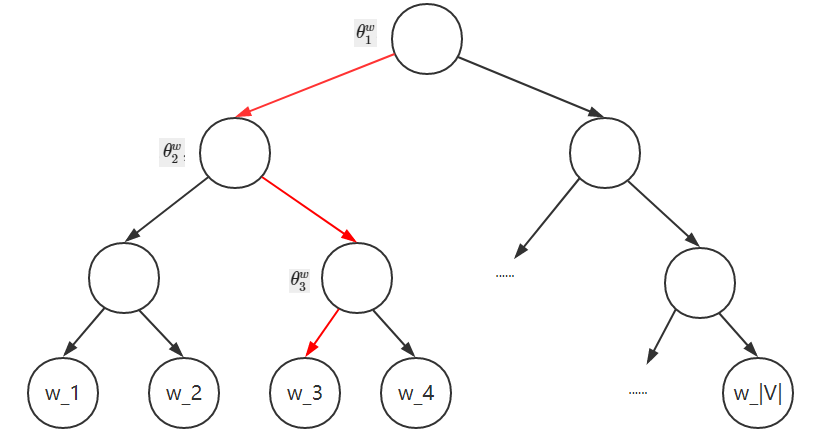
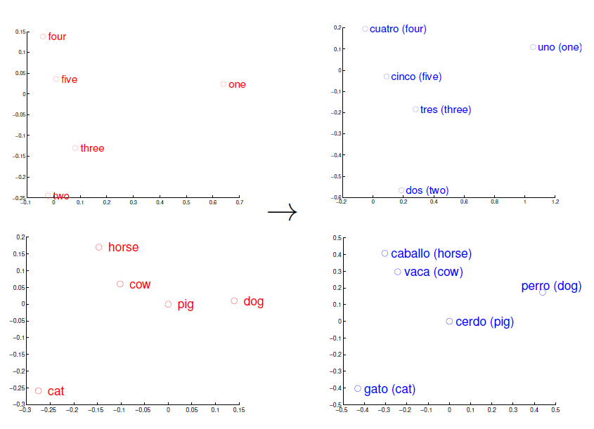

目录
word2vec是Google于2013年推出的开源的获取词向量word2vec的工具包。它包括了一组用于word embedding的模型，这些模型通常都是用浅层（两层）神经网络训练词向量。
Word2vec的模型以大规模语料库作为输入，通过神经网络训练到一个向量空间（通常为几百维）。词典中的每个词都对应了向量空间中的一个独一的向量，而且语料库中拥有共同上下文的词映射到向量空间中的距离会更近，并且其余弦相似度较高。
在学习word2vec的过程中深受[4],[6]两篇文章启发，其中的背景信息也借鉴了这些文章。并且学习序列生成模型中也从复旦邱锡鹏老师的《神经网络与深度学习》一书[8]中受益匪浅。
在机器学习中，统计语言模型(Statistic Language Model)作为自然语言处理的主要方法，也是很重要的一环。
在认知心理学中，有一个经典的实验，当一个人看到下面两个句子
面包上涂黄油
面包上涂袜子
后一个句子在人脑的语义整合时需要更多处理时间，更不符合自然语言规则。从统计的角度来看，这些语言规则可以看作时一种概率分布，而对于以上的两个句子，明显后面的句子发生的概率更小。
一个长度为\(T\)的文本序列看作一个随机事件\(X_{(1:T)} = ⟨X_1, · · · ,X_T ⟩\)，其中每个位置上的变量\(X_t\) 的样本空间为一个给定的词表（vocabulary）\(V\)，整个序列\(x_{1:T}\) 的样本空间为\(|V|^T\) 。
即，给定一个序列样本给定一个序列样本\(x_{1:T} = x_1, x_2, · · · , x_T\) ，其概率可以看出是\(T\)个词的联合概率。
\[ P(X_{1:T} = x_{1_T}) = P(X_1 = x_1, X_2 = x_2, ... , X_T = x_T) = p(x_{1:T}). \]
序列数据有两个特点：（1）样本是变长的；（2）样本空间为非常大。对于一个长度为\(T\) 的序列，其样本空间为\(|V|^T\) 。因此，我们很难用已知的概率模型来直接建模整个序列的概率。
根据概率的乘法公式，序列\(x_{1:T}\) 的概率可以写为
\[ p(x_{1:T}) = p(x_1)p(x_2|x_1)p(x_3|x_2) \cdots p(x_T|x_{1:(T-1)}) \\ = \prod^T_{t=1} p(x_t|x_{1:(t-1)}) \]
其中\(x_t ∈ V, t ∈ {1, · · · , T}\)为词表\(V\) 中的一个词，\(p(x_1|x_0) = p(x_1)\)。
因此，序列数据的概率密度估计问题可以转换为单变量的条件概率估计问题，即给定\(x_{1:(t−1)}\) 时\(x_t\) 的条件概率\(p(x_t|x_{1:(t−1)})\)。
给定\(N\) 个序列数据\(\{x^{(n)}_{1:T_n}\}^N _{n=1}\)，序列概率模型需要学习一个模型\(p_θ( {\mathbf x}|x_{1:(t−1)})\)来最大化整个数据集的对数似然函数。
\[ {\mathop {max}_{\theta}} \sum^N_{n=1}log\ p_\theta(x^{(n)}_{1:T_n}) = {\mathop {max}_{\theta}}\sum^N_{n=1}\sum^T_{t=1}log\ p (x_t^{(n)}|x1^{(n)}_{1:(t-1)}). \]
由于数据稀疏问题，当\(t\)比较大时，依然很难估计条件概率\(p(x_t|x_{1:(t−1)})\)。一个简化的方法是\(N\)元模型（N-Gram Model），假设每个词\(x_t\) 只依赖于其前面的
\(n − 1\) 个词（\(n\)阶马尔可夫性质），即
\[ p(x_t|x_{1:(t-1)}) = p(x_t|x_{(t-n+1):(t-1)}). \]
当\(n = 1\)时，称为一元（unigram）模型；当\(n = 2\)时，称为二元（bigram）模型，以此类推。
一元模型：在一元模型中，\(n=1\)，即序列\(x_{1:T}\)每一个词与其他词独立，即与它的上下文无关。即每个词都是从多项概率分布中获得的，其对数似然函数为：
\[ log\prod^{N'}_{n=1}p(x_{1:T_n}^{(n)};\theta) = log \prod^{|V|}_{k=1}\theta^{m_k}_k \\ = \sum ^{|V|}_{k=1}m_k\ log\theta_k \]
其中，通过一定的公式证明，可以得出最大似然估计等价于频率估计。
N元模型：与一元模型同理，当前词只依赖于前\(n-1\)个词，满足\(n\)阶马尔可夫性质。通过最大似然函数可得：
\[
p(x_t|x_{(t-n+1):(t-1)}) = \frac {m(x_{(t-n+1):t})} {m(x_{(t-n+1):t-1})}
\]
其中\({m(x_{(t-n+1):t})}\)为\(x_{(t-n+1):t}\)在数据集上出现的次数。
考虑到以下两个问题
当然以上两个问题显然是不能的，哪怕当前的训练集多大，都无法避免的出现某些词有着以上的两种问题，因此，平滑化技术就是用于处理以上两个问题。
深度序列模型是指利用神经网络模型来估计\(p_\theta(x_t|x_{1:(t-1)})\)。
神经概率模型是由Bengio等人在文《A neural probabilistic language model. Journal of Machine Learning Research》(2003)中提出。该模型使用了一个重要的工具——词向量。
神经语言概率模型一般可以分成三个部分：嵌入层、特征层、输出层。

令\(h_t = x_{1:(t−1)}\) 表示输入的历史信息，一般为符号序列。由于神经网络模型一般要求输入形式为实数向量，因此为了能够使得神经网络模型能处理符号数据，需要将这些符号转换为向量形式。一种简单的转换方法是通过一个嵌入表（Embedding Lookup Table）来将每个符号直接映射成向量表示。嵌入表也称为嵌入矩阵或查询表。
特征层用于从输入向量序列\(e_1, · · · , e_{t−1}\) 中提取特征，输出为一个可以表示历史信息的向量\(h_t\)。简单而言是通过训练数据选取词向量输入到神经网络中进行计算。
特征层可以通过不同类型的神经网络来实现，比如前馈神经网络和循环神经网络。常见的网络类型有以下三种：
输出层为一般使用softmax 分类器，接受历史信息的向量表示\(h_t ∈ R^{d2}\)，输出为词表中每个词的后验概率，输出大小为\(|V|\)。简而言之就是通常神经网络中的softmax，最后输出概率分布，然后可以进行loss的计算。
在谷歌提出word2vec模型之前，在语言神经网络模型中通常使用的是one-hot向量，即对于一个长度为10000的单词语料库，使用one-hot向量表示的话，单个单词可以表示为10000*1的向量，若当前词处于语料库的第4096个位置，则当前单词的one-hot向量是在第4096位置为1，其余位置为0的10000*1的向量。
这种词向量表示方法的优点是简便，便于直接使用，因为文字无法之间在数学计算中使用，因此通过一种向量表示法，可以将其放入语言计算模型中使用。
但缺点很明显，这种词向量仅仅只能表示当前词在语料库中的位置，仅能表示其身份信息，而无法表示两个向量之间的关联信息。
因此需要用到一种能够表示两个词之间相关信息的向量表示法。
word2vec又可称为word embedding，即词嵌入，因为无论是word2vec还是one-hot，这两种词的表示方法都是在神经概率模型中的嵌入层使用，作为神经网络模型能够处理的符号数据使用。
word2vec的表示形式与one-hot不同，每一个词在word2vec中同样是一个向量，但该向量的长度不固定，即非语料库的长度，该长度m可有算法的使用者而定，而向量的每个维度也并非直接使用0或1这种简单的方式表示，一般是任意的实数。由此表示形式，可以得出，这种词的表示方法既可以表示当前词的身份信息（即区别于其他词），又可以计算当前词与其他词之间的语义上的关系。
我们可以思考一下这种词之间的语义关联性。首先，对于每一个词而言，因其是多维向量，因此可以映射到高维空间中。其次，在映射到高维空间后，可以联系向量之间的关系，通过计算两个向量之间的余弦值而得出两个向量之间的关联程度。更甚之，可以通过词向量之间的加减，计算出其他词。
对于如何获取词向量而言，对于神经概率模型中，词向量（word embedding）即为神经网络中的参数，因其作为嵌入层的参数，输入形式为实数向量。因此获取word embedding，即是神经网络中的参数的学习。
这种训练通过给定一个训练序列数据集，而神经网络模型的训练目标则是为找到一组参数\(\theta\)，使得对数似然函数最大。其中\(\theta\)表示网络中的所有参数，包括嵌入矩阵M以及神经网络的权重和偏置。
而该嵌入矩阵即为词向量的矩阵，其大小为\(M\times N\)，\(N\)为语料库词的数量，M为给定的词向量的长度。
在google于2013年所提出的两篇文章[2]与[3]中，使用了两种重要的模型——CBOW模型与Skip-Gram模型。

由论文中所给出的图，可以形象地得知对于skip-gram模型而言，是由当前的词生成周围的词的一种神经概率模型，在这些模型讨论中，一般将词分为两种（最后训练出来的词向量也分为这两种），一种是作为中心词，另一种则是作为背景词。
这种假设方式在skip-gram模型中可以很明确的看出，由中心词（图中为\(w(t)\)）经过神经概率模型生成周围的词\((w(t-2), w(t-1), w(t+1), w(t+2))\)，在这之中，生成周围的词有前后各两个，相应的，把这个生成背景词范围的大小叫做背景词窗口，图中的背景词窗口为2。
在以上模型中，我们不妨将中心词的词向量设为\(v_c\)，而背景词可认为是\(u_o\)。在skip-gram模型中，输入层获取到当前作为中心词的向量，并在预测层与模型参数（实为背景词的词向量）做乘积计算，最后在输出层做一个softmax的运算输出生成背景词的一个概率分布。
设中心词\(w_c\)在词典中索引为\(c\)，背景词\(w_o\)在词典中索引为\(o\)，给定中心词生成背景词的条件概率可以通过对向量内积做softmax运算而得到：
\[ P(w_o \mid w_c) = \frac{\text{exp}(\boldsymbol{u}_o^\top \boldsymbol{v}_c)}{ \sum_{i \in \mathcal{V}} \text{exp}(\boldsymbol{u}_i^\top \boldsymbol{v}_c)}. \]
其中词典索引集\(\mathcal{V} = \{0, 1, \ldots, |\mathcal{V}|-1\}\)。假设给定一个长度为\(T\)的文本序列，设时间步\(t\)的词为\(w^{(t)}\)。假设给定中心词的情况下背景词的生成相互独立，当背景窗口大小为\(m\)时，跳字模型的似然函数即给定任一中心词生成所有背景词的概率
\[ \prod_{t=1}^{T} \prod_{-m \leq j \leq m,\ j \neq 0} P(w^{(t+j)} \mid w^{(t)}) \]
在上文中已经提到整个跳字模型从输入层到输出层的一个计算，那么对于这个神经网络，使用反向传播便可以对整个模型与词向量做一个训练。而在3.1.3小节及之后的讨论中提到，训练中是通过最大化似然函数来学习模型参数，即最大似然估计。由上文的推导即分析，可以得出loss为：
\[ - \sum_{t=1}^{T} \sum_{-m \leq j \leq m,\ j \neq 0} \text{log}\, P(w^{(t+j)} \mid w^{(t)}).\]
如果使用随机梯度下降，那么在每一次迭代里我们随机采样一个较短的子序列来计算有关该子序列的损失，然后计算梯度来更新模型参数。梯度计算的关键是条件概率的对数有关中心词向量和背景词向量的梯度。根据定义，首先看到
\[\log P(w_o \mid w_c) = \boldsymbol{u}_o^\top \boldsymbol{v}_c - \log\left(\sum_{i \in \mathcal{V}} \text{exp}(\boldsymbol{u}_i^\top \boldsymbol{v}_c)\right)\]
通过微分，我们可以得到上式中\(\boldsymbol{v}_c\)的梯度
\[ \begin{aligned} \frac{\partial \text{log}\, P(w_o \mid w_c)}{\partial \boldsymbol{v}_c} &= \boldsymbol{u}_o - \frac{\sum_{j \in \mathcal{V}} \exp(\boldsymbol{u}_j^\top \boldsymbol{v}_c)\boldsymbol{u}_j}{\sum_{i \in \mathcal{V}} \exp(\boldsymbol{u}_i^\top \boldsymbol{v}_c)}\\ &= \boldsymbol{u}_o - \sum_{j \in \mathcal{V}} \left(\frac{\text{exp}(\boldsymbol{u}_j^\top \boldsymbol{v}_c)}{ \sum_{i \in \mathcal{V}} \text{exp}(\boldsymbol{u}_i^\top \boldsymbol{v}_c)}\right) \boldsymbol{u}_j\\ &= \boldsymbol{u}_o - \sum_{j \in \mathcal{V}} P(w_j \mid w_c) \boldsymbol{u}_j. \end{aligned} \]
它的计算需要词典中所有词以\(w_c\)为中心词的条件概率。有关其他词向量的梯度同理可得。
训练结束后，对于词典中的任一索引为\(i\)的词，我们均得到该词作为中心词和背景词的两组词向量\(\boldsymbol{v}_i\)和\(\boldsymbol{u}_i\)。在自然语言处理应用中，一般使用跳字模型的中心词向量作为词的表征向量。
以上这一段公式的推导是取自《dive into deeplearning》一书[7]中，其中更为详细的推导可以见[4]，这篇文章中有着对整个word2vec模型与公式上更为详细与严谨的推导过程。
CBOW模型（Continuous Bag-of-Words Model）与skip-gram模型相反，CBOW模型是由周围的词（即背景词）生成中心词的一种神经概率模型，这里我们将背景词记为\(v_o\)，生成的中心词记为\(u_c\)。由于是多个背景词生成中心词，因此在输入层中，对背景词的词向量选取并进行求和取平均数，然后与跳字模型相同，通过与中心词的向量做乘积运算（即在隐藏层和输出层之间做矩阵运算），以及在输出层上的softmax归一化运算。
设中心词\(w_c\)在词典中索引为\(c\)，背景词\(w_{o_1}, \ldots, w_{o_{2m}}\)在词典中索引为\(o_1, \ldots, o_{2m}\)，那么给定背景词生成中心词的条件概率
\[P(w_c \mid w_{o_1}, \ldots, w_{o_{2m}}) = \frac{\text{exp}\left(\frac{1}{2m}\boldsymbol{u}_c^\top (\boldsymbol{v}_{o_1} + \ldots + \boldsymbol{v}_{o_{2m}}) \right)}{ \sum_{i \in \mathcal{V}} \text{exp}\left(\frac{1}{2m}\boldsymbol{u}_i^\top (\boldsymbol{v}_{o_1} + \ldots + \boldsymbol{v}_{o_{2m}}) \right)}.\]
为了让符号更加简单，我们记\(\mathcal{W}_o= \{w_{o_1}, \ldots, w_{o_{2m}}\}\)，且\(\bar{\boldsymbol{v}}_o = \left(\boldsymbol{v}_{o_1} + \ldots + \boldsymbol{v}_{o_{2m}} \right)/(2m)\)，那么上式可以简写成
\[P(w_c \mid \mathcal{W}_o) = \frac{\exp\left(\boldsymbol{u}_c^\top \bar{\boldsymbol{v}}_o\right)}{\sum_{i \in \mathcal{V}} \exp\left(\boldsymbol{u}_i^\top \bar{\boldsymbol{v}}_o\right)}.\]
给定一个长度为\(T\)的文本序列，设时间步\(t\)的词为\(w^{(t)}\)，背景窗口大小为\(m\)。连续词袋模型的似然函数是由背景词生成任一中心词的概率
\[ \prod_{t=1}^{T} P(w^{(t)} \mid w^{(t-m)}, \ldots, w^{(t-1)}, w^{(t+1)}, \ldots, w^{(t+m)}).\]
同样对于CBOW模型的训练与skip-gram模型类似，通过最大似然估计等价于最小化损失函数，可以得到\(loss\)：
\[ -\sum_{t=1}^T \text{log}\, P(w^{(t)} \mid w^{(t-m)}, \ldots, w^{(t-1)}, w^{(t+1)}, \ldots, w^{(t+m)}).\]
注意到
\[\log\,P(w_c \mid \mathcal{W}_o) = \boldsymbol{u}_c^\top \bar{\boldsymbol{v}}_o - \log\,\left(\sum_{i \in \mathcal{V}} \exp\left(\boldsymbol{u}_i^\top \bar{\boldsymbol{v}}_o\right)\right).\]
通过微分，我们可以计算出上式中条件概率的对数有关任一背景词向量\(\boldsymbol{v}_{o_i}\)（\(i = 1, \ldots, 2m\)）的梯度
\[\frac{\partial \log\, P(w_c \mid \mathcal{W}_o)}{\partial \boldsymbol{v}_{o_i}} = \frac{1}{2m} \left(\boldsymbol{u}_c - \sum_{j \in \mathcal{V}} \frac{\exp(\boldsymbol{u}_j^\top \bar{\boldsymbol{v}}_o)\boldsymbol{u}_j}{ \sum_{i \in \mathcal{V}} \text{exp}(\boldsymbol{u}_i^\top \bar{\boldsymbol{v}}_o)} \right) = \frac{1}{2m}\left(\boldsymbol{u}_c - \sum_{j \in \mathcal{V}} P(w_j \mid \mathcal{W}_o) \boldsymbol{u}_j \right).\]
有关其他词向量的梯度同理可得。同跳字模型不一样的一点在于，我们一般使用连续词袋模型的背景词向量作为词的表征向量。
这一部分的梯度推导也取自于《dive into deeplearning》一书[7]中。
在3.3.1节中，可以由两种模型的条件概率看出，对于一个词的条件概率而言，背景窗口虽然能够限制背景词的数量，但是这个背景词需要从整个语料库中选择，即对于跳字模型中的条件概率而言：
\[
P(w_o \mid w_c) = \frac{\text{exp}(\boldsymbol{u}_o^\top \boldsymbol{v}_c)}{ \sum_{i \in \mathcal{V}} \text{exp}(\boldsymbol{u}_i^\top \boldsymbol{v}_c)}.
\]
其中的分母的\(u_i\)需要从训练集的语料库中选择，因此使得最终的softmax的计算量非常的巨大，因此提出了两种近似计算，分别是Hierarchical softmax(层序softmax)与Negative Sampling(负采样)。我对这两种方法深受[4]这篇文章的理解，因此接用其中的表示方法。
在一般书籍与论文的举例中，通过使用平衡树来解释，但在实际实现的代码中则是通过Huffman树去实现这个方法。
文章[4]中引入相关的表示记号如下：
由这些标记符号我们可以结合以下的二叉树图对整体参数的分布记每个词的条件概率做一个深入的理解。
其中，正如文章[4]中所提到的那样，为何还要为Huffman树中的每个非叶子结点也定义一个同长的向量呢？文章[4]中解释道：“它们只是算法中的辅助向量”。具体的详细推导可见文章[4]，这里给出一定简要的理解与解释。
首先是为什么Huffman树能够大量的减少计算量。我们可以通过二叉树形象的来看。

再上图的二叉树中，我们可以看到，语料库大小为\(|V|\)的情况下，每个词向量作为二叉树的根节点的每个向量数据，其中由辅助参数\(\theta^w_{l^w-1}\)非叶子结点上的向量数据。那么在二叉树中如何定义条件概率函数\(P(w_c \mid Context(w))\)(其中使用CBOW模型的条件概率)？更具体的说，就是如何使用平衡二叉树中的结点向量去定义这个条件概率函数。以图中红色的路径为例，中间一共经历了3次分支，每一次分支都可以视为二分类。
从二分类的角度来看，对于每一个非叶子结点，需要考虑为左右孩子制定一个分类类别，我们假设左为正，而右为负，根据逻辑回归，易知：
\[\sigma(x^T_w \theta) = \frac{1}{1+\exp(-x^T_w \theta)}.\]
那么分类为负的概率则为：
\[
1 - \sigma(x^T_w \theta)
\]
其中\(\theta\)则是作为非叶子结点的辅助参数向量。
那么，我们可以看到该路径的条件概率则为（以下忽略参数）：
\[P(w_3 \mid Context(w)) = \sigma(\boldsymbol{x}_w^\top \boldsymbol{\theta}_{n(w_3,1)}) \cdot (1- \sigma(\boldsymbol{x}_w^\top \boldsymbol{\theta}_{n(w_3,2)})) \cdot \sigma(\boldsymbol{x}_w^\top \boldsymbol{\theta}_{n(w_3,3)}).\]
\[P(w_c \mid Context(w)) = \prod^{l^w}_{j=2}p(d^w_j \mid x_w, \theta^w_{j-1}),\]
其中
\[ p(d^w_j \mid x_w, \theta^w_{j-1}) = \begin{cases} \sigma(x^T_w \theta^w_{j-1}), & d^w_j = 1 \\ 1 - \sigma(x^T_w \theta^w_{j-1}), & d^w_j = 0 \end{cases} \]
或写成整体表达式：
\[ p(d^w_j \mid x_w, \theta^w_{j-1}) = [\sigma(x^T_w \theta^w_{j-1})]^{d^w_j} \cdot [1 - \sigma(x^T_w \theta^w_{j-1})]^{1-d^w_j} \]
其中\(d^w_j=1\)表示为正类，\(d^w_j=0\)表示为负类。
也就是说，通过将语料库中的每一个词表示为二叉树上的叶子结点，可以将原来的条件概率变为简单的路径上的二分类的相乘，由此大大的缩短了整个计算量。
那么又为何使用Huffman树呢？学过二叉树与Huffman树的同学到现在应该能够想到，对于整个语料库中，每一个词的复现的频率是不同的，因此在计算过程中，有一些高频率的的词用到的次数就较多，而Huffman树则可以通过对高频词进行较短的编码，对低频词进行较长的编码来进一步缩短计算量。
相比于层序softmax，负采样显得更为简单。
负采样同样使用了正负样本的概念，不再使用Huffman树，而是利用随机负采样，如此能够大幅提高性能。
同样是在CBOW模型中，词w的上下文为Context(w)需要预测w，那么给定的Context(w)就是正样本，而负样本则是不出现在这个上下文窗口中的词。
那么，负样本是如何选取的呢？在上一小节也提到，对于语料库中的不同词而言，不同的词的复现频率是不同的，因此在语料库上的负样本的选取就变成了一个带权采样问题。
而对于样本的权值设置则是通过如下公式：
\[ p(w)=\frac{[count(w)]^{\frac{3}{4}}}{\sum_{u \in D}[count(u)]^{\frac{3}{4}}} \]
在选取好一个关于w的负样本子集NEG(w)，并且定义了词典\(D\)中的任意词\(w'\)，都有：
\[ L^w(w')= \begin{cases} 1 & w'=w \\ 0 & w'\neq w \end{cases} \]
对于一个给定的正样本\((Context(w),w)\)，我们希望最大化
\[ g(w)=\prod_{u\in \{w\}\bigcup NEG(w)} p(u|Context(w)) \]
其中，正负样本的条件概率类似于层序softmax中的正负类的条件概率：
\[ p(u|Context(w))= \begin{cases} \sigma(X_w^T\theta^u) & L^w(u)=1 \\ 1-\sigma(X_w^T\theta^u) & L^w(u)=0 \end{cases} \\ = [\sigma(X_w^T\theta^u)]^{L^w(u)} \cdot [1-\sigma(X_w^T\theta^u)]^{1-L^w(u)} \]
负采样直接通过负样本（采样不出现在背景窗口中的词）与正样本（出现在背景窗口中的词）计算目标词出现的条件概率，相比于层序softmax，不需要构建一个Huffman树与使用树中每一个非叶子节点的参数向量，取而代之的是直接使用语料库中的词。
对于层序softmax与负采样的梯度计算的详细推导可以在文章[4]中有详细提到。
对于层序softmax与负采样这两种近似计算训练出来的词向量，每一个词其实有两种形式的词向量，一种是作为中心词的词向量，一种是作为背景词的词向量，一般情况下直接选择中心词的词向量作为最终训练得到的词向量使用。可以从负采样近似训练中得出，作为背景词的词向量可能会是不存在生成目标词的背景窗口中，因此作为背景词的词向量相比之下的置信度较低。
在google的Tomas Mikolov团队开发了一种词典和术语表的自动生成技术，能够把一种语言转变成另一种语言，该技术利用数据挖掘来构建两种语言的结构模型，然后加以对比，每种语言词语之间的关键即“语言空间”，可以被表征成数学意义上的向量集合。在向量空间内，不同的语言享有许多共性，只有实现一个向量空间向另一个向量空间的映射与转换，语言翻译即可实现。该技术效果非常不错，对英语和西班牙语的翻译准确率高达90%。
文[5]在介绍算法时举了一个简单的例子，可以帮助我们更好地理解词向量的工作原理。

词向量的一个简单应用就是求得当前次的近义词与类比词。
对于近义词而言，直接在训练好的词向量中计算其他词与当前次的余弦相似度，选取最高的几个即可求出当前次的近义词。
除了求近义词以外，我们还可以使用预训练词向量求词与词之间的类比关系。例如，“man”（男人）: “woman”（女人）:: “son”（儿子） : “daughter”（女儿）是一个类比例子：“man”之于“woman”相当于“son”之于“daughter”。求类比词问题可以定义为：对于类比关系中的4个词 \(a : b :: c : d\)，给定前3个词\(a\)、\(b\)和\(c\)，求\(d\)。设词\(w\)的词向量为\(\text{vec}(w)\)。求类比词的思路是，搜索与\(\text{vec}(c)+\text{vec}(b)-\text{vec}(a)\)的结果向量最相似的词向量。
又如“首都-国家”类比：“beijing”（北京）之于“china”（中国）相当于“tokyo”（东京）之于什么？答案应该是“japan”（日本）。
通过词向量之间的加减即可求得所对应词的类比词。
本文中，简要的对当前自然语言处理中所使用的词向量做了一个简要的介绍。在词向量的训练过程中，每一个词向量（word vector）都被要求为相邻上下文中的word的出现作预测，所以尽管我们是随机初始化Word vectors，但是这些vectors最终仍然能通过上面的预测行为捕获到word之间的语义关系，从而训练到较好的word vectors。而这些训练好的词向量在一些自然语言任务中使用的效果非常出色，比如词向量就可以应用到情感分类的问题中。
[1] Yoshua Bengio, Réjean Ducharme, Pascal Vincent, Christian Jauvin. A Neural Probabilistic Language Model. Journal of machine learning(JMLR), 3:1137-1155, 2003
[2] Mikolov T, Chen K, Corrado G, et al. Efficient estimation of word representations in vector space[J]. arXiv preprint arXiv:1301.3781, 2013.
[3] Mikolov T, Sutskever I, Chen K, et al. Distributed representations of words and phrases and their compositionality[C]//Advances in neural information processing systems. 2013: 3111-3119.
[4] https://www.cnblogs.com/peghoty/p/3857839.html
[5] Tomas Mikolov, Quoc V. Le, llya Sutskever. Exploiting Similarities among Languages for Machine Translation. arXiv:1309.4168v1, 2013.
[6] https://www.zybuluo.com/Dounm/note/591752#5-%E5%9F%BA%E4%BA%8Enegative-sampling%E7%9A%84%E6%A8%A1%E5%9E%8B
[7] https://zh.d2l.ai/
[8] https://nndl.github.io/